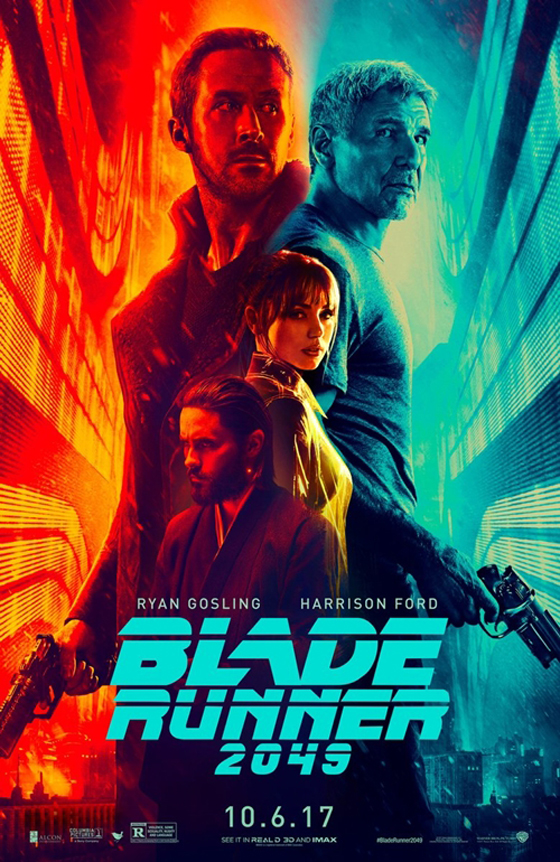

블레이드러너 2049 (Blade Runner 2049), 2017
현대판교 CGV 아이맥스에서 보고 왔습니다.
아이맥스관 첨 가봄 ^^;;;
Arrival 감독인지 모르고 봤는데
나중에 찾아보고 굉장히 납득했습니다 ^^;;;
(Arrival 후기: http://komx2.egloos.com/6068225 )
이들에게 미래도시란 네온사인과 홀로그램 인가 ㅋㅋㅋ
SF 좋아하고 블레이드러너 팬인 M군은 영화감상 후 제일 처음 든 생각이
I need to put my music on cassette tapes 이었다고 ㅋㅋㅋㅋㅋㅋㅋㅋㅋㅋㅋㅋㅋㅋㅋㅋ
백업의 소중함. 저의 경우에는 내 그림들, 아트웍을 출력해서 종이로 보관해야하나는 교훈을 준 영화였습니다 ㅋㅋㅋㅋ
미드를 볼때도 그렇고 영화도
이들은 가족의 소중함, 관계의 소중함 등등을 굉장히 강조하는데
이런 메세지를 볼때마다
아니 도대체 저동네는 가족이란 개념이 얼마나 박살이 났길래 드라마 영화에서 일케 강조를 하지 -_-;;
란 생각만 드네요 ^^;;
영상은 더없이 훌륭했습니다 ㅜㅜ